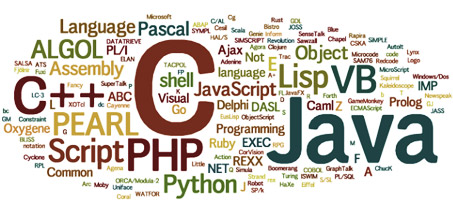

There has been a big surge of new programming requirements for programmers with the massive expansion and development in smartphones and other handheld computing devices like tablets and phablets. They provide varied programming platforms and also the applications that are developed, need to be integrated in the different operating systems running the mobiles.
The need for developing applications across a variety of programming platforms is necessary for developing some utility applications, games as well as webpages and other multimedia apps to serve either a specific mobile OS or be open for cross platform usage.
While programming languages like C/C++ or PHP are needed, there is also huge requirement for .NET, Java and J2EE. Since most programmers use PC to design and develop most of these applications, Windows SDK plays a vital role in developing apps, as well as C#.NET, XML and also Microsoft Visual C++.
The change in the business environment and technology has been overwhelming. It has not only become complex and dynamic, IT security has also become another most important factor guiding modern day business and information technology. We have one of the most dedicated team of experts that specialise in every aspect of these concerns.
They have indepth knowledge about a broad spectrum of technologies as well as programming platforms. This allows them to design and develop the most comprehensive solutions, irrespective of your present solutions and infrastructure if any. They are also extremely talented and creative in designing and developing some of the most engaging and effective applications for a variety of mobile platforms as well as cross platform use.
While developing apps for a lengthy variety of screen sizes, different configurations and their different hardware specifications, a number of things are to be considered. Most of these applications are preinstalled in handheld devices as well as some that can be downloaded and installed in devices. The programmers need to keep in mind, the various small differences among the variety of platforms themselves. Our expert team has the most talented programmers who excel in C/C++, Java, PHP, J2EE and similar other programming languages.
They also use Windows SDK or other development kits as well as C#.NET, .NET frameworks, XML. Microsoft Visual C++ is also used for developing some of the most interesting apps. We design apps that not only can be proprietary but can also be freely downloaded from different sources. All apps are designed and developed in our labs using all these programming softwares along with a lot of imagination and creativity. The apps range from utility softwares as well as games among others.
.NET
Developed by Microsoft Corp, specifically for Microsoft Windows .NET is essentially a software framework. Language interoperability and a huge library are some of its features. The huge Base class library of .NET framework provides network communication, numeric algorithms, cryptography, database connectivity among others. Also user interface, database access and web applications development are some of the other features of .NET framework’s Base Class Library.
Our experts at .NET Development Services artfully combine their own source codes with libraries and the .NET Framework. The framework is extensively and skilfully used to create new applications for the Windows platform using a number of programming platforms. Our experts at .NET Development Services also develop stunning and effective applications for other platforms also. Memory management, security and exception handling are some of the exceptional features of the application in which virtual machine and the CLR programmes in the framework tend to run.
Cross-platform development of .NET framework apps is possible due to the Portable Class Library projects in Visual Studio and some other programming languages also. Our expert .NET programmers and apps developers also write and build their own portable assemblies; these assemblies work without modification on multiple programming platforms.
We have been creating some of the most stunning mobile apps, Windows store apps and some desktop apps also. We have some of the most talented experts who use the .NET applications and Visual Studio skills among others, to other platforms. Using Portable Class Libraries and using the .NET applications to run in phones, tablets and Xbox as well as some of our milestones.
We have been developing some of these amazing cross platform applications using .NET for some proprietary uses as well as for the open market. The .NET experts at our .NET Development Services, design and deliver applications for almost every business as well as other needs. Gaming apps, utility apps as well as fun and entertainment apps are not only our forte; we also develop and design customised apps for your specific requirements also.
C#.NET
A modern, simple and general purpose object oriented language developed by a team of developers led by Anders Hejlsberg, C# also known as C Sharp is one of the most favoured languages across the globe for developing mind-blowing apps for Windows, iOS, Android and also cross platform uses.
C#.Net was developed by Microsoft Corp and is considered as one of the CLI or Common Language Infrastructure programming languages. Approved by ISO and ECMA, this is multi-paradigm programming language with a number of programming disciplines. The documentation is similar to Javadoc of Java, though based on XML. This is also supported by C# compiler.
C#.NET Development Services of our team uses the combination of C#.NET to build and develop mobile apps that run on one or more platforms. Our developers understand that the secret of a good app is standard coding practises and parameters consistently throughout the project as well as the code. This makes the apps excellent in all aspects of performance as well as efficiency and effectivity.
Using a high degree of creativity as well as expertise they design and develop some of the most astonishing apps for Windows based devices as well as iOS and Android run devices. The applications range from fun and games to utility. They can be tweaked for proprietary use and for public use also. Most of the apps are available for download for a fee or for free, and some are integrated and embedded with the devices.
C#.NET have developed over the years as a mature and powerful tool and also provides memory management and asynchronous programming support. The LINQ feature also makes it an excellent option for C#.NET Development services experts. Features like garbage collectors and memory management really makes this language special.
Our developers who work with C#.NET to develop apps using a variety of programming platforms, also prefer this language to design and develop platform-independent apps as well as platform specific ones too. They have also found suitable ways to deal with problems that come when layers are placed between the user and the native platform. Our team of experts are committed to excellence and quality of their products.
Java
Java is an object-oriented computer programming language, which is class-based, concurrent and also for general purpose. The cornerstone of the design - it is one of the few programming platforms that has very little implementation dependencies. Java was developed by erstwhile Sun Microsystems which is presently merged with Oracle Corporation. Java can be best described as a set of multiple computer software and specifications, which can provide systems for application software development for use in cross platform environment as well.
The Write-Once-Run-Anywhere or WORA allows developers in Java Development services teams across the world to run all codes or applications to run on any platform without the need for recompilation. Mostly based on C and C++ syntaxes, the language has fewer low level facilities like them. We use Java-card, Java-ME, Java-SE and EE for all our Java development services. Mostly Java-ME is used for developing applications aimed at PDAs, handheld devices, Smartphones, Set-top boxes and others. The EE and SE are mainly used by developers for desktop PCs, servers and various APIs among many others.
Google Android Operating system uses Java, but not the class libraries; however, Java SDK is available for developing, designing and using applications Android specific usage. Similar SDK are available for other mobile handheld or smartphone usage also. Java is one of the most successful and user friendly programming platforms that can easily run in JVM or Java Virtual machine, without any restrictions due to the computer architecture. Java is now one of the most preferred programming platforms for developing a variety of apps for mobiles, smartphones or other handheld devices.
It is also one of the favourite platforms for creating corporate specific tooling. This is due to its ability of leveraging existing java infrastructure and building interconnected and highly intelligent tools. At our Java development services, we also build web services, messaging services and configurable our custom designed software tools. They include content management systems, BPM, application servers, databases and so on to cater to your specific or broad spectrum needs.
J2EE
J2EE is the popular name for the Java 2 Platform or the Enterprise Edition. It has undergone a sea of change since its inception and release of the 1.0 version. it has slowly become one of the leading and preferred programming platforms across the globe. The J2EE platform is actually a combination of a set of services, protocols and APIs. All these provide the necessary functionality for developing web-based applications that can be multilayered too.
The Java 2 Platform Enterprise Edition or the J2EE provides platform-independent Java centric environment. It was developed by Sun Microsystems which is presently merged with Oracle and is mainly used for developing, deploying, designing and building web based enterprise applications online. We have a formidable team at our J2EE development services, who have years of hands-on experience as well as loads of creativity to deliver the best solutions.
We not only provide expert application designs and development in J2EE technologies from our J2EE development services facilities but also develop and deliver customised and custom made Java applications, as well as applications built using other programming platforms. Customised business solutions for corporate clients and also for private clients are designed and developed by our expert teams.
We test and deploy our applications for platform-specific usage as well as for cross platform use also. Our services can be scalable, portable and easy to use. We also provide support and maintenance for all our products and applications. One of our unique services over the years has been our re-engineering and enhanced support for the existing J2EE applications. Their quality, performance, efficiency and effectivity are all overhauled, in addition to customising your requirements.
We also have a huge library of J2EE based applications, which can be customised and reused for a variety of purposes, thereby saving a lot of time and cost for the clients. We offer the most diverse range of solutions for IT requirements and use J2EE and other programming platforms in our J2EE labs to design and develop the most effective and efficient applications.
PHP
PHP codes can be directly embedded in HTML source, instead of calling external files to process data. It can include command line interface, and also use standalone graphical applications. We have a strong and experienced creative team of PHP Development Services that uses this open source server side programming language for applications, website as well as for software development.
Our team not only comprise experts who take up challenges and develop programs and applications across a variety of programming platforms but are also ready to take up all possible kinds of challenges. As one of the leading PHP development services, we have the right mix of creativity and experience.
Our dedicated professionals are experts in developing web designs for e-commerce as well as other web related needs and also programming applications for different platforms. We ensure that the PHP developments are done rapidly and critical projects are implemented within their deadlines. We also ensure cross platform compatibility of these applications. We ensure that they are fast, efficient and effective, as well as take minimum memory space to run.
We design the most secure applications with high performance ratio at an affordable price. We use the best from different programming platforms to produce the best apps that matches your requirements. We also provide apps support and maintenance as well as analytical tool integration.
Our PHP development services experts also provide social networking websites and application as well as social networking apps integration for your static or dynamic sites. We boast of the most creative web designers and also SEO experts that are in our development teams. We offer the best packages at the most reasonable price, that can address all your apps and web related needs.
C/C++
C was developed by Dennis Bell Labs, as a general purpose programming language. One of the most popular programming languages, C is also the inspiring factor for a number of programming platforms like Java, C#, PHP, Unix’s C Shell and so on. C++ was being developed to be a pre-processor of C but it has almost become a superset of C. C++ can also be intermediate level language and comprises features of both high level as well as low level programming languages.
C++ was developed by Bjarne Stroustrup at Bell Labs. C/C++ are two of the most favoured programming platforms for developing applications and other programs for a variety of uses. We have a talented pool of developers and programmers in our C/C++ Development services team who develops compilers, high performance server and client applications, games and cross platform as well as platform-specific applications.
We also develop C/C++ compiler software and many other custom-designed and developed software solutions for both servers handheld devices and other electronic controls. We also use complaint multi-agent platform that supports C/C++ mobile agents in embedded systems as well as in networked intelligent mechatronics. Experts at our C/C++ Development services team use programming platforms and a host of other softwares to develop some utility applications as well as other applications that cater to the fields of entertainment, education, and lot more.
Allocating memory allocations and memory management using static, dynamic and automatic memory allocation is effectively and efficiently using the programming languages. Our team is developing applications as well as other programs for embedded systems of handheld devices and also for other computing systems which will be workable in all platforms like iOS, Windows as well as Androids.
Though C++ is generally considered to be a superset of C, this is not necessarily true. Most C++ compilers can be made to compile C codes. They can also be used in a variety of other ways to design and develop programs, applications and softwares for use across various platforms.
Copyright © 2016 Mgainz Communication Pvt Ltd. - All Rights Reserved.
 +91 124 670 7927
+91 124 670 7927 support@mgainz.com
support@mgainz.com